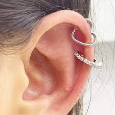

DESPUÉS DE PONERTE EL PIERCING
Evita tocar o girar el piercing con las manos sucias.
MANTÉN LIMPIO TU PIERCING
Limpia el piercing dos veces al día con solución salina y un bastoncillo de algodón.
EVITA PRODUCTOS QUÍMICOS
Evita el contacto directo con productos químicos, como lociones, perfumes o maquillaje, en el área del piercing.
CUIDADO AL DORMIR
NO vuelvas a cubrir el tatuaje con ningún tipo de apósitos o vendas
EVITA REMOVER EL PIERCING
No remuevas el piercing durante el proceso de cicatrización, a menos que sea necesario para su limpieza.
EVITA NADAR Y BAÑOS DE AGUA
Evita nadar en piscinas, playas o bañeras durante el proceso de cicatrización.
NO CAMBIES LA JOYERÍA PREMATURAMENTE
No cambies la joyería del piercing antes de que esté completamente curado.
SOL Y EXPOSICIÓN AL SOL
Evita exponer el piercing al sol directo y protégelo con protector solar si es necesario.